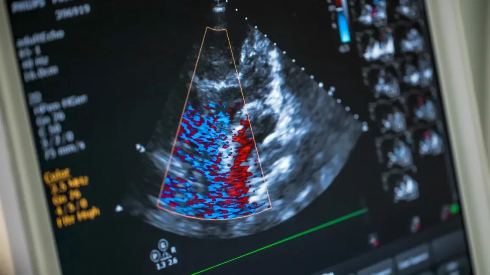

Este projeto investiga o uso de microbolhas como agentes de contraste acústico combinados com ondas de ultrassom focalizado para potencializar a terapia ultrassônica no tratamento de trombose. O estudo demonstra que a interação entre ultrassom terapêutico e microbolhas aumenta significativamente a eficácia da dissolução de coágulos sanguíneos, reduzindo a necessidade de agentes trombolíticos farmacológicos e minimizando os efeitos colaterais associados.
